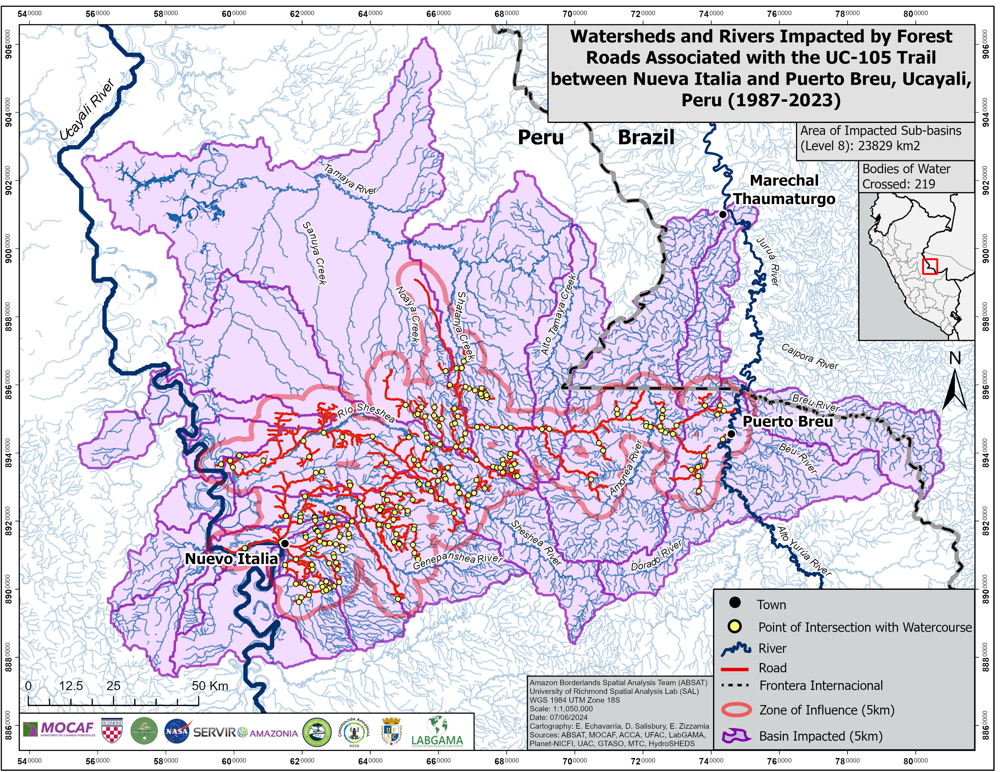

Case study · 2024
Road Building Impacts on the Rivers and Watersheds of the Yurúa-Juruá Amazon Borderlands
Using GIS and remote sensing to evaluate the impacts of road expansion on rivers, watersheds, and forests in the Peruvian Amazon.

The question
Roads are one of the primary drivers of environmental change in the Amazon rainforest. As new roads are built, they increase access to previously intact forests, accelerating deforestation, fragmenting ecosystems, and threatening rivers and watersheds that support both biodiversity and Indigenous communities.
Our research focused on the transboundary Yurúa–Juruá region of Peru, where little spatial information existed on how expanding road networks intersect important river systems. We set out to identify the watersheds most vulnerable to road development and create maps that could support conservation planning and environmental decision-making.
What I did
Using ArcGIS Pro, I analyzed the relationship between forest roads, rivers, and watersheds throughout the study area. After comparing multiple hydrography datasets, our team selected Peru's National Geographic Institute (IGN) river data because it most accurately represented the region's waterways. We combined these data with HydroSHEDS Level 8 watershed boundaries and historic road datasets dating back to 1987.
I created a 5-kilometer buffer around the road network to identify watersheds potentially affected by nearby development and generated road–river intersection points to locate where infrastructure crossed waterways. Every intersection was verified using high-resolution PLANET satellite imagery before producing maps showing both the complete history of road expansion since 1987 and the current road network in 2024.
What I found
The analysis identified numerous locations where roads intersect rivers and pass through ecologically significant watersheds, revealing how transportation infrastructure has expanded into increasingly remote areas over the past four decades. Many of the affected watersheds contain high levels of biodiversity and provide critical freshwater resources, making them especially vulnerable to future development. By combining historic road data with watershed analysis, the project provides a spatial framework for identifying conservation priorities, monitoring future road expansion, and supporting organizations working to protect the Amazon rainforest.
What I learned
This project showed me how GIS can transform large, complex datasets into information that is meaningful for decision-makers. Beyond developing technical skills in spatial analysis and remote sensing, I learned the importance of selecting reliable datasets, validating results with satellite imagery, and communicating scientific findings through clear, accessible maps. Presenting this research to government officials, embassies, and United Nations representatives reinforced how effective spatial visualization can support conversations about conservation and sustainable development.
Deliverables
- Maps → Two maps showing watersheds affected by the UC-105 Road: the current extent (2023) and the cumulative historical extent of road impacts (1987–2023).
- Research Poster → Poster created to present at the 2025 American Association of Gepgraphers conference in Detroit, MI, and the University of Richmond's 2025 Arts and Sciences Student Research Symposium.
- Final report (PDF) → 12-page summary written for HJWA leadership.